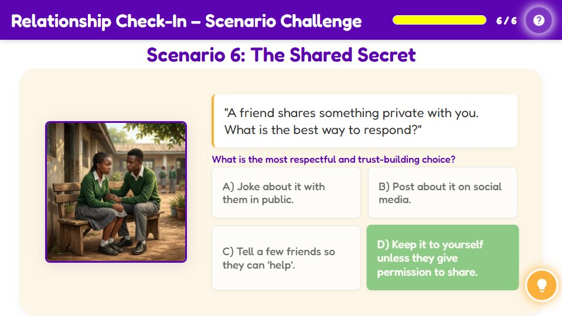

Relationship Check-In – Scenario Challenge
Relationship Check-In – Scenario Challenge
What is the most respectful and trust-building choice?
Activity Conclusion

Lesson Complete
Key Takeaways
| Aspect | Detail |
|---|---|
| Meaningful Conversations | Engage in meaningful conversations. |
| Personal Boundaries | Respect personal boundaries. |
| Empathy | Practice empathy and understanding. |
| Reliability | Be reliable and trustworthy. |
| Appreciation | Show appreciation and gratitude. |
Activity Introduction
Let us see how you handle real-life relationship moments! You will read short scenarios and choose the most respectful, caring, and trust-building response. Think about how each choice might make the other person feel. Ready? Let us begin!
Learner Instructions
- Read each scenario carefully.
- Choose the response that best builds trust, respect, and understanding.
- After answering, review the feedback to learn why it is correct or what you could improve.
- Try to make the best choice on your first attempt, but remember, learning happens with reflection too!